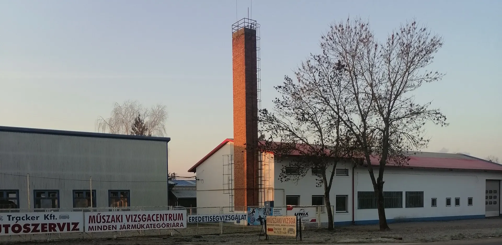
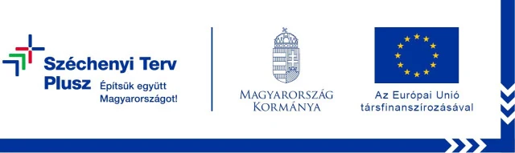

Járműjavítás, karbantartás
Minden típusú személygépkocsi, tehergépkocsi és pótkocsi javítása, karbantartása.

Személy- és tehergépkocsi javítás, műszaki vizsgáztatás, zöldkártya és eredetiségvizsgálat egy telephelyen – a motortól a traktorig.
Szerviz és vizsgaállomás egy helyen: válassza ki a járművet, és megmutatjuk, mit vállalunk rá a telephelyen.
Válasszon járművet:
Javítástól a vizsgáig, egy telephelyen.
Nem kell a szerviz és a vizsgaállomás között ingáznia: amit a vizsga előtt javítani kell, azt itt helyben megcsináljuk.
Minden típusú személygépkocsi, tehergépkocsi és pótkocsi javítása, karbantartása.
Helyben: motor, személyautó, kisteher 3500 kg-ig, traktor, pótkocsi, mezőgazdasági vontató, lassújármű.
Átnézzük a járművet, és kijavítjuk, ami miatt nem menne át a vizsgán.
Minden jármű eredetiségvizsgálata – vásárlás, átírás előtt.
Környezetvédelmi vizsgálat a műszaki vizsgával együtt vagy külön.
Hibakód kiolvasása és törlése, valamint karosszériajavítás.
Új ipari kapuk, nyílászárók és korszerű berendezések – hogy a munka gyorsabb legyen, és többféle feladatot vállalhassunk.

KKV Technológia Plusz Hitelprogram (GINOP Plusz-1.4.3-24). Visszatérítendő hitel: 15 600 000 Ft. A projekt az Európai Unió támogatásával, a magyar állam társfinanszírozásával valósult meg; műszaki befejezése: 2025. 11. 12.
Tágas udvar, a munkafelvételi irodában pedig ügyfélváró.
„Alig értük el Szigetvárt, utolért minket az autósok rémálma… az elvárhatón túl is kedvesen, segítőkészen, együttérzően figyelmesen és főleg azonnal siettek a segítségünkre.”
Google-vélemény„Bár nem voltam bejelentve, mégis azonnal feltették az autómat a komputerre, és gyors vizsgálatot követően megkaptam az írásos eredményt. Az ár korrekt volt.”
Google-vélemény„13 éve oda viszem az autómat, ha javíttatnom kell. Eddig mindig korrektek voltak, gyorsan megjavították. Jó a szerelő csapat.”
Google-véleményÍrja meg, mivel jönne, és munkaidőben visszahívjuk. Ha sürgős, hívjon most:
Motorkerékpárokat, személygépkocsikat és kis tehergépkocsikat 3500 kg össztömegig, valamint traktorokat, pótkocsikat, mezőgazdasági vontatókat és lassújárműveket, helyben.
Nem. A műszaki vizsgára való felkészítést, a javítást és a vizsgát is ugyanazon a telephelyen végezzük.
Igen: minden jármű eredetiségvizsgálatát vállaljuk, és környezetvédelmi vizsgálatot (zöldkártya) is végzünk.
Hétfőtől péntekig 7:00–12:00 és 13:00–16:00 között. Szombaton és vasárnap zárva.
7900 Szigetvár, Dencsházai út 1., a 6-os főút és a Pécs–Kaposvár–Balaton irány kereszteződésének közelében.
Általában a forgalmi engedélyt, a személyazonosító okmányt és a kötelező biztosítás igazolását. Ha nem a tulajdonos hozza a járművet, meghatalmazás is kell. Telefonon szívesen pontosítjuk.